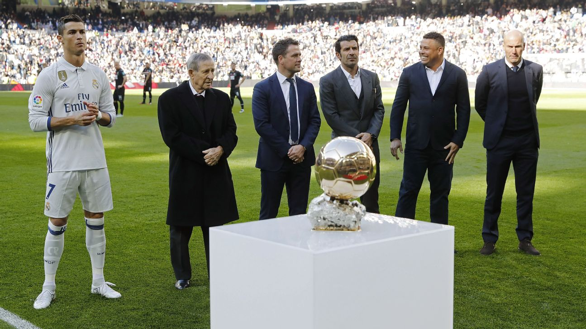
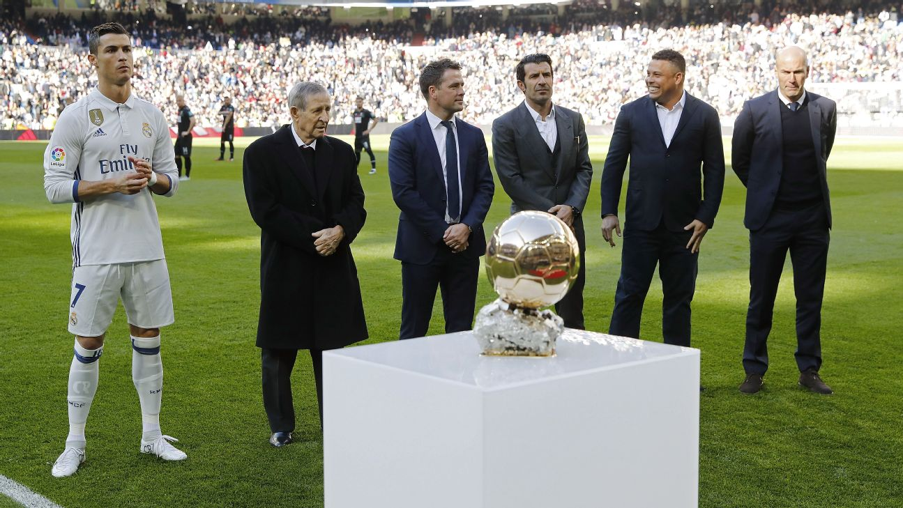
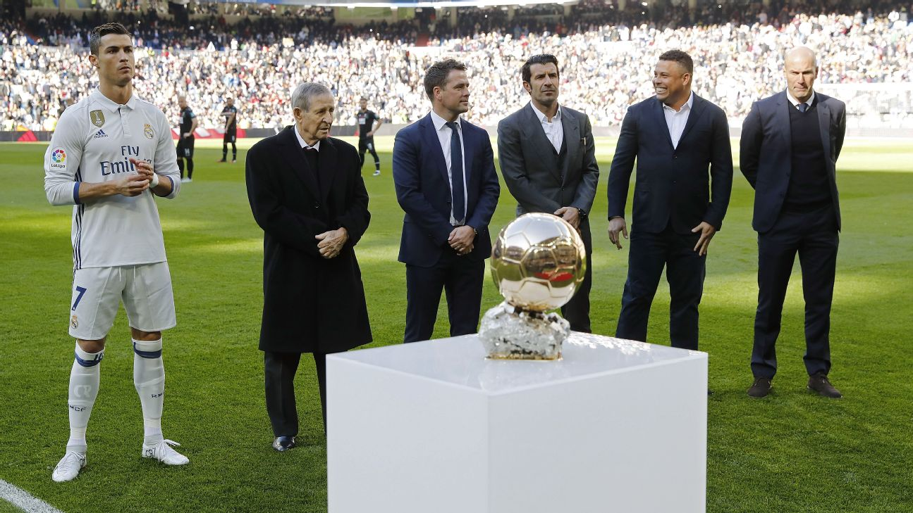
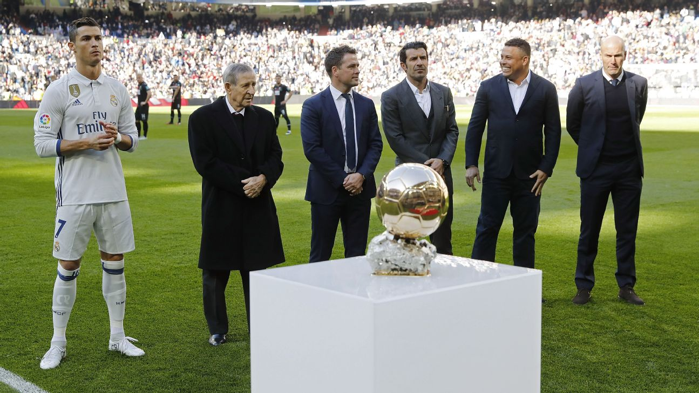

| Year | Team | Achievements |
|---|---|---|
| 2002-2003 | Sporting CP | Primeira Liga Champion |
| 2003-2009 | Manchester United | 3x Premier League, 1x FA Cup, 1x UEFA Champions League |
| 2009-2018 | Real Madrid | 2x La Liga, 4x UEFA Champions League, 2x Copa del Rey |
| 2018-2021 | Juventus | 2x Serie A Champion, 1x Coppa Italia Champion |
| 2021-Present | Al Nassr FC | Soon to be announced achievements! |
Ronaldo is a Portuguese professional footballer who plays as a forward for Saudi Pro League club Al Nassr and the Portugal national team.
Widely regarded as one of the greatest players of all time, he has won five Ballon d'Or awards, four European Golden Shoes, and has been named to the UEFA Team of the Year and FIFPro World XI multiple times.
Ronaldo holds the records for most goals scored in the UEFA Champions League, most international goals, and most appearances in the UEFA Champions League. He is also the first player to win league titles in England, Spain, and Italy.
Widely regarded as one of the greatest players of all time, he has won five Ballon d'Or awards, four European Golden Shoes, and has been named to the UEFA Team of the Year and FIFPro World XI multiple times.
Ronaldo is known for his incredible goal-scoring ability, athleticism, and work ethic.
| VBayern | VWolfsburg | VJuventus |
|---|---|---|
| 5-0 | 3-2 | 4-1 |